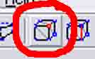
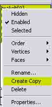
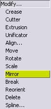
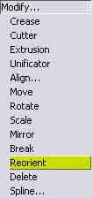

Step 15: The Brake Lights!
This is where you line up the brake lights, if the car didn't come with some.
First, download this file, which is the default brake lights.
Next, download this texture. It is not needed in the car file, since it is already embedded in race.res.
Open ZModeler, and import the car body mesh(es).
Then, import the brake lights file.
If the brake lights won't light, go to Material Editor, go to the Textured Material: effects.tga, and add effects.tga, then set the alpha to Glowing, Alpha Glow with Illumination Effect, Apply and Close, and your brake lights will light like they do in-game.
Now, you switch to vertices mode,

and Move the vertices around, X, Y, AND Z, so they just cover the car's brake light locations.
An easier way to get the left and right lights to be symmetrical, is to delete the unaligned light, then Copy the brake light object,

And mirror the Copy, by going Modify... Mirror,

Hit objects Mode, selecting ONLY horizontal axis, and in the Front or Rear view, click on the Copied light. Then, go Modify... Reorient,

and click on the mirrored mesh to turn the faces in the right direction.
You can also create a copy of the light if your car has a third brake light, like the brake light behind the rear window in some cars...
Then, export the brake lights as your car's short nameB.mod, like in r34gtrvb.mod.
If you use brakelt.mod, it overwrites the default brake lights, and you may have conflicts with other cars that use brakelt.mod.
Once you are lined up and alight, you can move ONWARD.